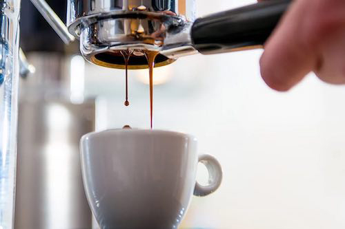

Life without coffee is a life without joy. That is why Gulp Roast has been proudly serving up the freshest, brightest coffee to the San Francisco Area since 2000.
Founded by Jerry and Jemima Gulp after moving to the Bay Area from the East Coast after they were missing that quick, on-the-go, coastal coffee shop taste when buying local coffee beans, our coffee is locally sourced with the most delicious blends brewed and delivered directly to your doorstep, right from coffee farmers in the Bay Area. Our coffee makes even the most exhausting days full of energy to get through.
We don’t just brew coffee - it is our mission to bring our Gulp Roast customers the most flavorful, full-bodied experiences that we can serve.
Products
What Do We Offer At Gulp Roast?

Triple-Blended Coffee Beans
Skillfully roasted and carefully blended, our Triple-Blended Coffee Beans don't just wake you up in the morning, they pack a lasting punch that is sure to leave you wanting more. With silky smoothness and layered flavors, there is really no better way to start your day.
Columbian-Blended Espresso Beans
With our Columbian-Blended Espresso Beans, you can finally feel like a professional barista. Bright and clean with an intense burst of flavor, these full-bodied beans strike the perfect balance between the most delicate roasts and fruitful aromas.
Lightly Roasted Coffee Beans
Our Lightly Roasted Coffee Beans offer the world chance to brighten every day with a whole lot of flavor and inspiration. Try these to receive the perfect balance between bold flavor and subtle sweetness. There's no better way to start you day than that.
Purchasing
Where Can You Get Our Gulp Roast Products?
Our coffee shop is a cozy hangout with an array of freshly brewed lattes and coffees. You can purchase our coffee at the following location: